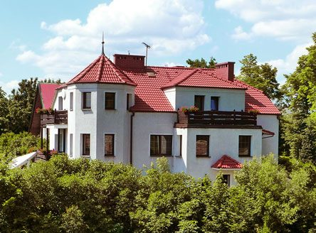
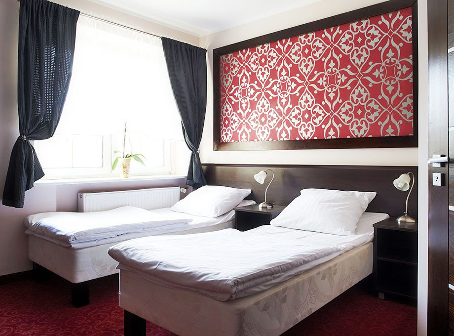
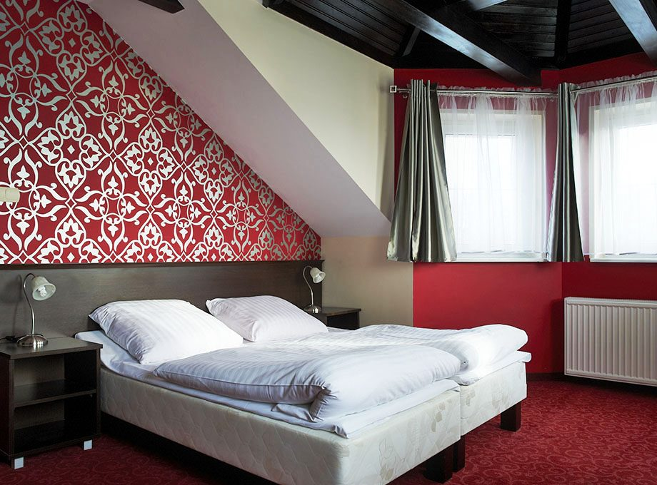
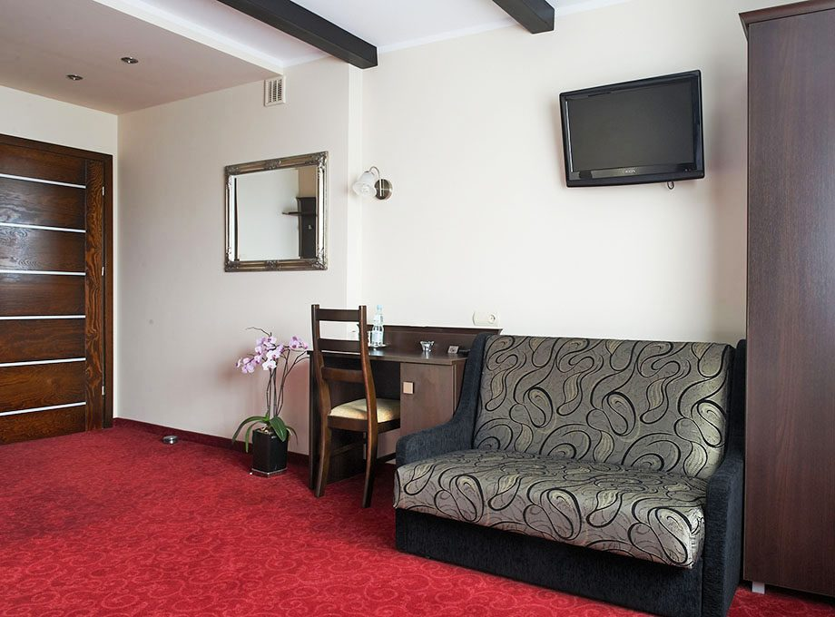
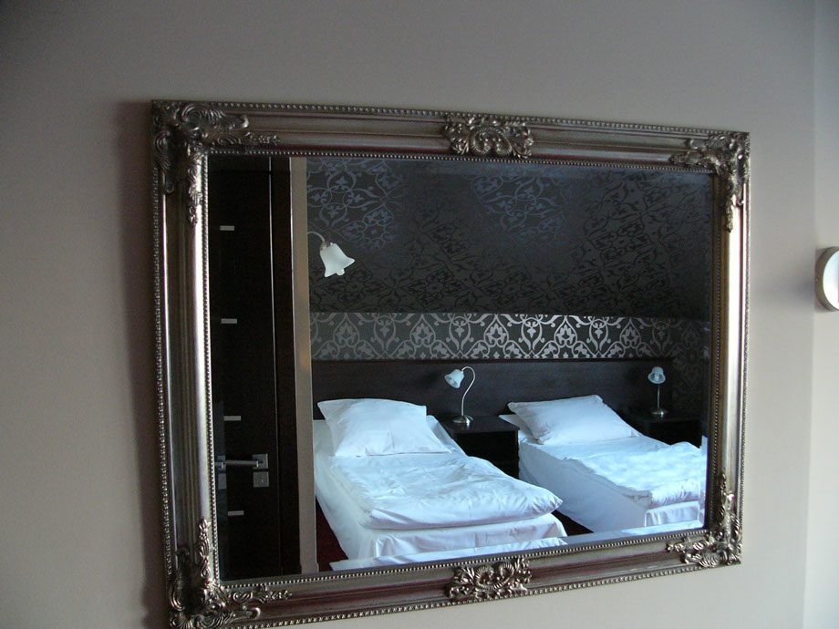

Niewielki, przytulny pensjonat w cichej okolicy Człuchowa: 11 pokoi i apartament, kominek, trzy jeziora w zasięgu spaceru.
"Pensjonat Przy Zamku" jest niewielkim, ale bardzo przytulnym pensjonatem, położonym w malowniczej, cichej i spokojnej okolicy w pobliżu XIII-wiecznych ruin Zamku Krzyżackiego oraz w otoczeniu trzech jezior.
Pokoje utrzymane są w subtelnej tonacji barw, a nowoczesny wystrój ma zapewnić wypoczynek na najwyższym poziomie. Widok z okien to niezapomniane spojrzenie na Zamek Krzyżacki. Ciepło kominka oraz niezwykły nastrój panujący w pensjonacie sprawiają, że nasi goście czują się jak w domu.
To idealne miejsce na spokojny wypoczynek, weekend we dwoje, wyjazd rodzinny albo nocleg w podróży służbowej. Serdecznie zapraszamy!

Łącznie 11 pokoi i apartament, rozmieszczonych na dwóch kondygnacjach. Każdy z łazienką z prysznicem, telewizorem LCD i bezprzewodowym internetem.

Dla podróżujących służbowo i par. Cisza, wygodne łóżka, biurko do pracy.

Dla rodzin i małych grup. Przestronne, na poddaszu lub piętrze.

Sypialnia i część wypoczynkowa z sofą. Najlepszy widok na Zamek Krzyżacki.
Cennik i dostępność: prosimy o telefon 59 834 33 49 lub e-mail. Rezerwacja bezpośrednia jest zawsze w najlepszej cenie.

Do dyspozycji gości oddajemy salę konferencyjno-kominkową dla celów szkoleniowych oraz do organizacji imprez zgodnie z życzeniem klienta. Sala pomieści około 25 osób.
Sprawdza się przy szkoleniach firmowych z noclegiem, spotkaniach rodzinnych, kameralnych przyjęciach i kolacjach przy kominku. Układ stołów dopasowujemy do potrzeb.
Zapytaj o terminPokoje, wnętrza i otoczenie pensjonatu.
Człuchów to miejsce dla każdego: spokój dla zwolenników odpoczynku biernego i mnóstwo możliwości dla aktywnych.
Wzniesiony około 1365 r., po Malborku najpotężniejszy zamek obronny Krzyżaków. Zachowana wieża z tarasem widokowym, dziedziniec i mury - trzy minuty spacerem od pensjonatu.
Ścieżki leśne wokół człuchowskich jezior, plaże i przystanie. Spływy kajakowe, regaty żeglarskie, wędkowanie, rowery - wszystko w zasięgu spaceru lub krótkiej przejażdżki.
Niezmierzone przestrzenie lasów w mieście i okolicy: raj dla grzybiarzy i miłośników spacerów. Blisko do Chojnic, Pojezierza Drawskiego i Parku Narodowego Bory Tucholskie.
Pensjonat Przy Zamku
ul. Kościelna 4
77-300 Człuchów
Tel.: 59 834 33 49
Fax: 59 834 55 25
E-mail: pensjonatprzyzamku@op.pl
{kind=link}
{kind=link}
{kind=link}
{kind=link}
{kind=link}
{kind=link}
{kind=link}
{kind=link}